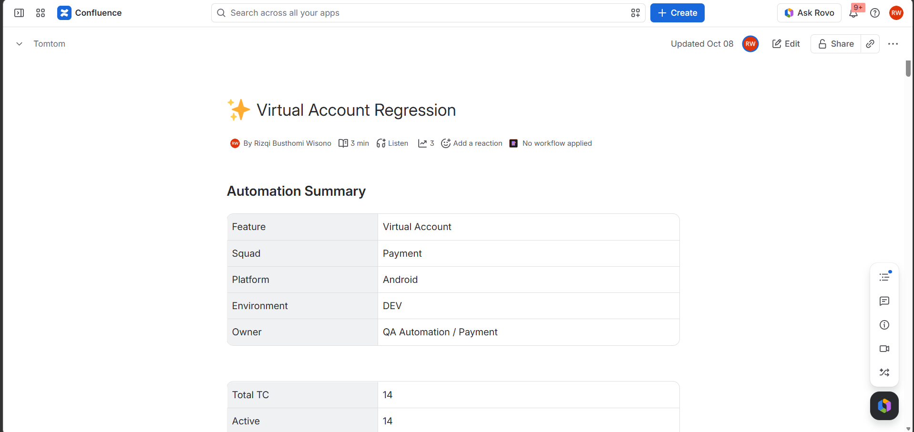
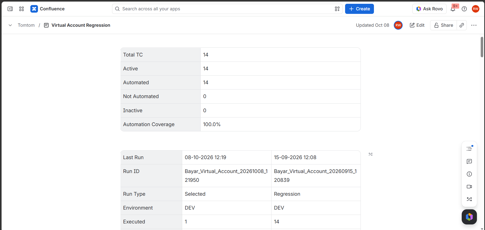
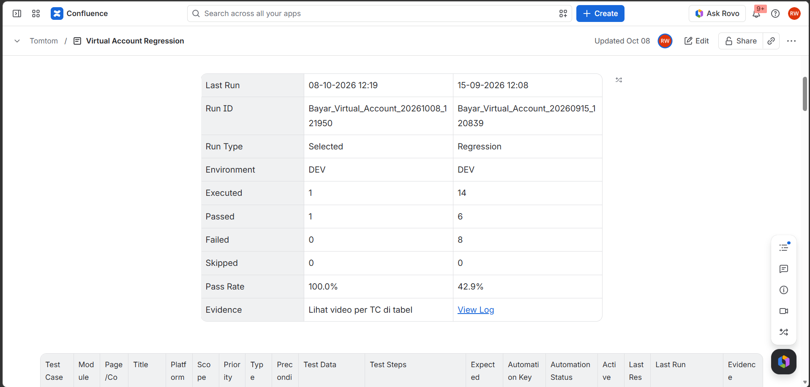
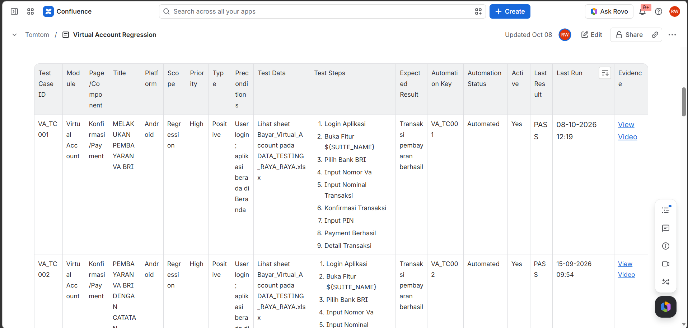

Alur inquiry dan pembayaran
Proses terdiri dari dua tahap. Inquiry memvalidasi data transaksi, lalu responsnya menjadi masukan untuk permintaan pembayaran. Pengujian memeriksa status respons dan kelengkapan data wajib.
Otomasi API pembayaran dan aplikasi Android, disertai validasi fungsional, regresi, dan integrasi untuk mendukung rilis.
Pengujian mencakup layanan API dan aplikasi Android. Masing-masing menggunakan framework otomasi yang sesuai dengan platformnya.
Menguji operasi CRUD, memeriksa integritas permintaan dan respons, serta memvalidasi alur integrasi pembayaran.
pytestMengotomasi alur pembayaran aplikasi Android menggunakan Robot Framework dan Appium, termasuk eksekusi pada perangkat cloud LambdaTest.
Robot Framework + AppiumMenyusun skenario fungsional, regresi, dan integrasi bersama Payment Squad. Kriteria penerimaan, risiko, dan cakupan tes diselaraskan dengan pengembang, manajer produk, dan analis bisnis.
Menyiapkan panduan konfigurasi agar tim QA dapat menjalankan dan mengembangkan rangkaian pengujian. Mencatat, melacak, dan memverifikasi defect sebelum rilis produksi.
Proses terdiri dari dua tahap. Inquiry memvalidasi data transaksi, lalu responsnya menjadi masukan untuk permintaan pembayaran. Pengujian memeriksa status respons dan kelengkapan data wajib.
Alur pembayaran satu tahap untuk skenario yang tidak memerlukan inquiry.
Skenario menggunakan data dari Excel dan dijalankan dengan pytest. Allure menampilkan rincian tiap langkah beserta lampiran permintaan dan respons. Framework terintegrasi dengan Jira untuk pelaporan hasil pengujian.
Script mengunggah hasil pengujian ke Confluence untuk melengkapi dokumentasi pelaksanaan.



